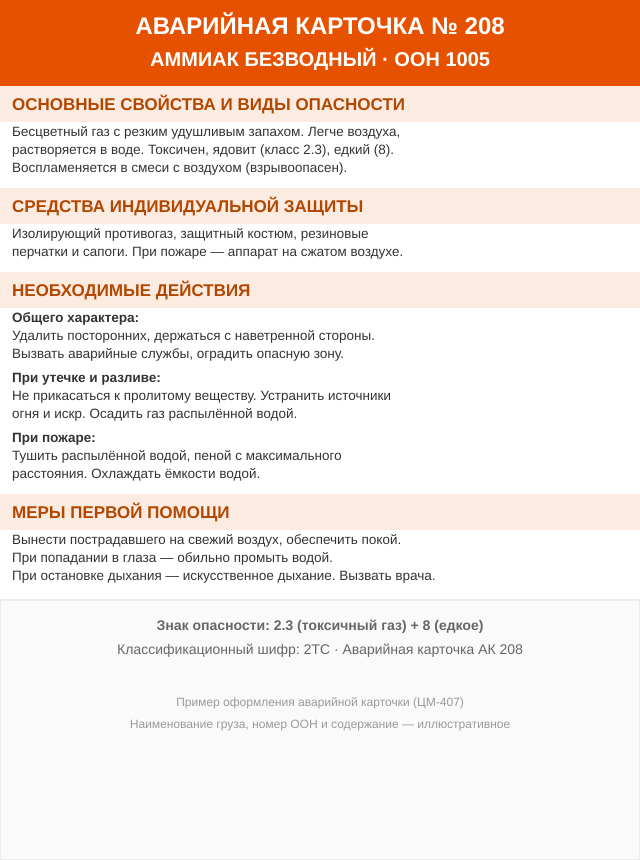

Rail carriage of dangerous goods
The carriage of dangerous goods by rail is governed by the Rules for the Carriage of Dangerous Goods by Rail (PPOG; approved by the Council for Railway Transport of the CIS member states, protocol No. 15 of 05.04.1996, as amended). The main provisions are set out below.
General provisions (Chapter 1)
Application of the rules
- The Rules apply to the carriage of dangerous goods on the railways of the member states of the Commonwealth and are mandatory for railway transport workers, consignors and consignees of dangerous goods, ports, and freight-forwarding enterprises.
- In matters not provided for by the Rules, the general rules for the carriage of goods by rail apply.
- Carriage of dangerous goods in bulk is performed in accordance with the Rules for the Carriage of Liquid Goods in Bulk in Tank Wagons.
- Carriage between SMGS member states that are not members of the Commonwealth is governed by the Rules for the Carriage of Dangerous Goods — Annex 2 to the SMGS; between Commonwealth states and states not participating in the SMGS — on the basis of special agreements.
Classification of dangerous goods
Dangerous goods include substances, materials, articles and waste which, during transport, loading/unloading operations and storage, may harm the environment or cause an explosion, fire, damage to vehicles, or the death, injury, poisoning, burns or illness of people and animals. By the nature of the hazard they are divided into 9 classes (explosive substances, gases, flammable liquids, flammable solids, oxidising, toxic, radioactive, corrosive, miscellaneous) — in accordance with the UN Model Regulations. The assignment of a good to a specific class, category and compatibility group is made by the consignor.
Goods admitted to carriage
- Goods listed in the Alphabetical List of Dangerous Goods (Annex 2) and the List of Class 1 Dangerous Goods (Annex 10) are admitted to carriage.
- Goods similar in properties to those listed but not named are assigned to the relevant UN number (generic name or "N.O.S.") and carried under the conditions of that number.
- For goods that cannot be assigned to the list, special conditions of carriage may be established (under national legislation in domestic traffic, or under the Agreement on the Carriage of Goods under Special Conditions — in international traffic).
Completion of documents
For each consignment the consignor submits to the station a consignment note completed under the SMGS and these Rules. In the "Description of goods" column the following are stated in sequence: the hazard code, after a slash — the UN number, the proper shipping name of the dangerous goods, the number of the main (and, in brackets, the subsidiary) hazard label, the classification code (for gases — the code), the emergency card number. Example:
"336/UN 1230 METHANOL, 3 (6.1), 3022, EC 319"
"268/UN 1005 AMMONIA, ANHYDROUS, 2.3 (8), 2TC, EC 208"In the upper part of the consignment note the consignor affixes the red stamps provided for the goods.
Escort of dangerous goods
- Goods marked in the Alphabetical List with special conditions are carried escorted by conductors (specialists) of the consignor/consignee; without escort the wagons are not accepted for carriage.
- Conductors must know the service instructions, the dangerous properties of the goods, first-aid measures and safety in emergency situations.
- The consignor supplies the conductors with personal protective equipment, a first-aid kit, tools, fire-fighting and decontamination means.
- If a wagon is defective en route, it is detached and kept under the guard of a conductor until the defect is rectified or a representative of the consignor arrives.
Carriage in covered wagons and containers (Chapter 2)
Packaging, packing and marking
- Dangerous goods are presented for carriage in packaging provided for by standards or technical specifications, as well as the requirements of the UN Model Regulations or GOST 26319-2020 "Dangerous goods. Packing". The packaging must be strong, sound, exclude leakage and spillage, and be inert to the contents.
- Goods emitting dangerous gases/vapours, explosive on drying or reacting with air/moisture, and oxidising goods are packed hermetically.
- Glass packaging is packed in strong boxes (wooden, polymeric, metal) with non-combustible cushioning materials; the walls of the boxes must be at least 50 mm higher than the sealed bottles.
- Each package bears marking characterising the type and degree of danger: hazard labels, the name of the goods, the classification code and the UN number. Hazard labels are divided into the main one (by class/division) and a subsidiary one (for the type of subsidiary danger).
Requirements for wagons and containers
- For the carriage of dangerous goods, universal or specialised covered wagons and containers are used (depending on the designation in the Alphabetical List: KV/UK, SKV/SKVa, SK/SKa); for liquid goods — tank wagons (VTs) or tank containers (KTs).
- Wagons and containers must bear hazard labels and the UN number; an orange plate with the hazard code and the UN number, a white plate with the emergency card number.
- Only sound and cleaned wagons/containers are presented for loading; fitness in commercial terms is determined by the consignor, the technical inspection by wagon-depot workers.
- After unloading, the consignee must clean the wagon/container of residues, wash and decontaminate it if necessary, and remove the hazard labels and plates.
Acceptance and delivery
- Dangerous goods are presented for carriage at non-public places; acceptance/delivery at public places is by the direct "road vehicle–wagon" method under the control of station workers.
- If the packaging, marking or mass does not conform (a small consignment), the goods are not accepted for carriage and a general-form report is drawn up.
- Arrived dangerous goods must be collected by the consignee within 24 hours; the consignee is not entitled to refuse acceptance.
Joint carriage
It is forbidden to load into one wagon/container dangerous goods with different classification codes not permitted for joint carriage (Annex 4). Joint carriage of dangerous goods with non-dangerous ones — under Annex 5. The return of empty cleaned packaging — on general grounds as non-dangerous goods with a note in the consignment note; empty uncleaned packaging from specialised goods is carried under the conditions of the goods carried in it.
SMGS requirements for the carriage of dangerous goods
In international rail traffic, Annex 2 to the SMGS — "Rules for the Carriage of Dangerous Goods" applies. Key requirements:
- Dangerous goods are carried only in compliance with Annex 2 to the SMGS — as to classification, packaging, marking and documents, harmonised with the UN Model Regulations (RID/ADR).
- Goods listed in the SMGS List of Dangerous Goods, with the UN number and proper shipping name, are admitted to carriage.
- Each package and vehicle must bear hazard labels and orange plates with the hazard identification number and the UN number.
- Transport documents are completed under the SMGS requirements; an emergency card for the dangerous goods is attached to the consignment note.
- The conditions of joint loading, stowage and securing, as well as the requirements for rolling stock (wagons and containers), are observed.
Emergency response (TsM-407)
The Safety Rules and Procedure for the Elimination of Emergency Situations with Dangerous Goods during their Carriage by Rail (approved by the Russian Emergencies Ministry on 31.10.1996 No. 9/733/3-2 and the Russian Ministry of Railways on 25.11.1996 No. TsM-407) establish a uniform procedure for action in the event of accidents with dangerous goods on rail transport.
Purpose: to regulate the actions of railways, consignors/consignees, emergency rescue services and authorities in the elimination of emergency situations (leakage, spillage, fire, damage to packaging) with dangerous goods, including radioactive materials.
Structure:
- general provisions;
- the procedure for eliminating emergency situations;
- the procedure for emergency restoration work;
- the organisation of fire-fighting;
- medical and preventive measures;
- localisation of contamination, neutralisation and decontamination;
- elimination of accidents with radioactive substances.
Emergency card (EC)
A key element of the emergency response system is the emergency card (EC). This is a reference document attached to the transport documents for dangerous goods and used first of all in an accident for the rapid identification of the danger and correct action. Each dangerous good has its own card with a unique number (e.g., EC 208 for ammonia, EC 319 for methanol).
What the card consists of
The emergency card consists of four main sections:
- Main properties and types of danger — the physical and chemical properties of the goods (state, odour, solubility, toxicity, fire and explosion hazard, danger to humans).
- Personal protective equipment — which gas mask, protective suit, gloves, footwear and other PPE to use when working with the goods.
- Necessary actions — general actions (evacuation, cordoning off, calling services), actions on leakage/spillage/scatter and actions on fire.
- First-aid measures — what to do with the injured person (take to fresh air, rinse eyes, artificial respiration, etc.).
What information it contains
- Card number (EC No.) — a unique identifier linked to the goods;
- Name of the goods and UN number;
- Hazard class and the hazard label number;
- a description of the dangerous properties, PPE, the order of action and first aid.
How to read the card
In an accident, the responder finds the relevant EC by the name of the goods (or the UN number in the documents) and reads the sections in sequence: first identifies the danger (section 1), then selects protection (section 2), then performs the actions (section 3) and gives first aid (section 4). The order of the sections is deliberately built "from hazard assessment to action" so that in a stressful situation decisions are made sequentially and without errors.

Note that the emergency cards were later updated by a separate document ("Emergency cards for dangerous goods carried by the CIS railways…"), to which the PPOG also refers.